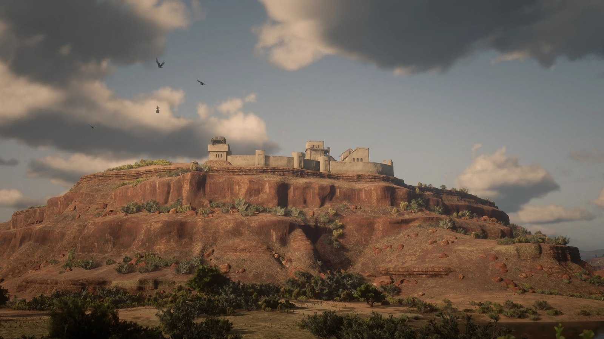
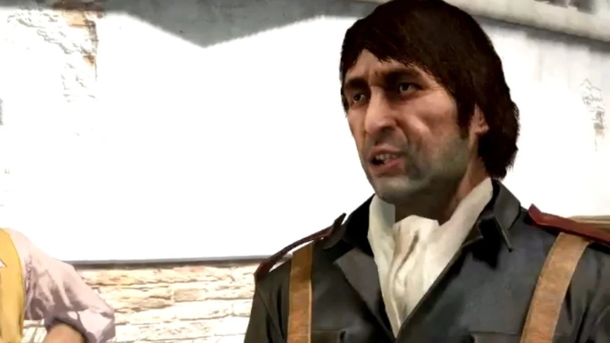
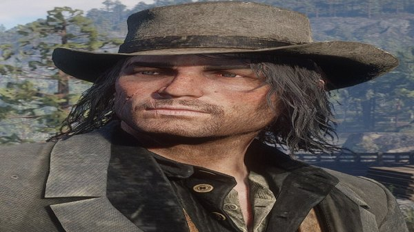
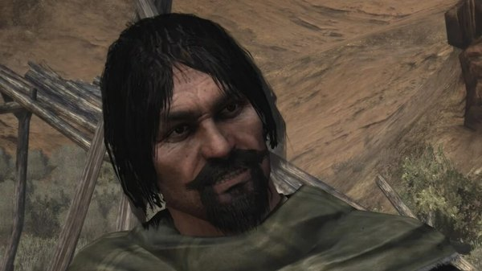
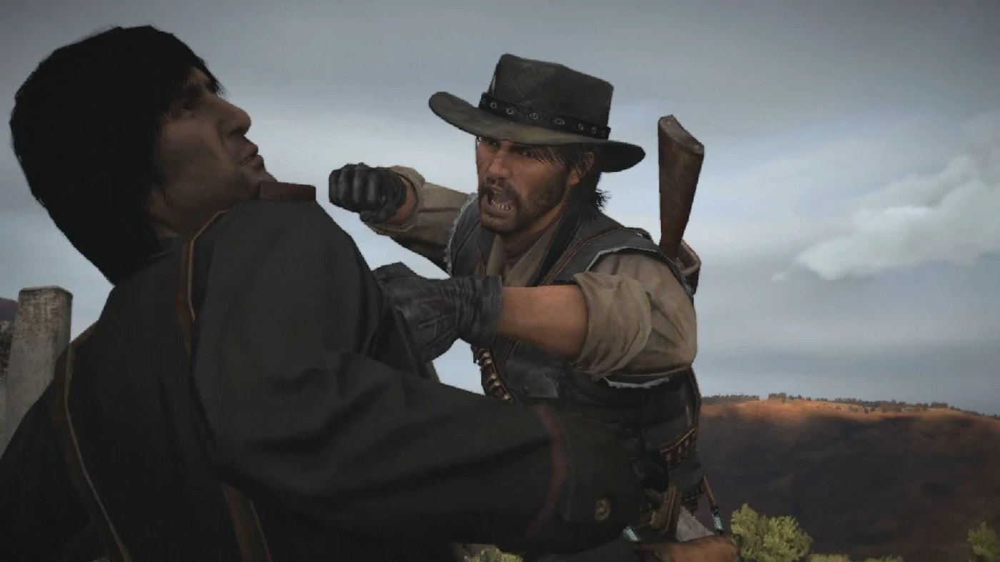

Character · Nuevo Paraiso
Vincente de Santa
Vincente de Santa is a captain in the Mexican Army in Red Dead Redemption, and the officer Colonel Allende puts between himself and John Marston.
He repeatedly promises to hand over Bill Williamson and Javier Escuella, and repeatedly finds another errand for John to run instead.
- Affiliation
- Mexican Army
- Role
- Captain under Colonel Allende
- Status
- Killed by John Marston in 1911
- Nationality
- Mexican
- Games
- Red Dead Redemption
Biography
The army's middleman
De Santa is John's first contact with the government side in Nuevo Paraiso. He takes John on as a hired gun against the rebels, and each job comes with the assurance that the two outlaws will be produced once the work is done. They never are. The pattern runs for most of the Mexican chapter.
Repression
The work De Santa hands out is the day-to-day business of the occupation: raids on villages, executions of suspected rebels, and the hunt for Abraham Reyes. He carries it out without hesitation and expects the same from the men under him.
The betrayal
De Santa eventually turns John over to be executed. John escapes the firing squad, hunts him down and kills him. De Santa begs for his life first. The break ends John's arrangement with the army for good, and he commits to the rebel side for the assault on Escalera.
Relationships
Agustin Allende
The colonel he serves, and whose orders he carries out in the province.

John Marston
The gunman he strings along, then betrays, and who kills him for it.

Abraham Reyes
The rebel leader he is tasked with hunting down.
Behind the scenes
Vincente de Santa appears in Red Dead Redemption (2010). His name is also written Vicente in some materials.
Gallery
